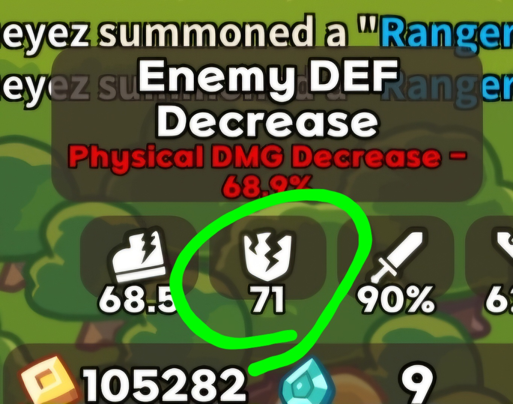

The enemy defense stat
Note: I will refer to Defense Reduction as DR later in the guide
In Lucky Defense enemies have a defense stat. Early on, enemies have a low defense stat. As the waves get higher and higher, the enemies that appear have higher and higher defense. If they have a high defense, you do less damage. They can ignore around 80% of the damage you deal to them if they have high defense. But if they have a really low defense stat, you actually get bonus damage. You can get so much bonus damage that you nearly double the damage they take.
Which attacks does defense block?
The defense stat of the enemies only protects them from physical damage. Some characters do magic damage. The most common magic DPS characters are
- King Dian
- Dragon
- Lancelot
- Iron Meow
- Lazy Taoist
None of the damage these characters deal will be affected by an enemies defense stat.
Defense DOES affect the damage physical characters deal though. The most common physical DPS are
- Batman
- Rocket Chu
- Tar
- Vayne
- Blob
- Bomba
Any of the damage these characters deal will be affected by the enemy defense stat
How can you see enemy defense stats?
You can actually see exactly how your damage is getting effected by the enemy defense stat by clicking on this icon I've circled in green.
The effect here is "Physical DMG Decrease - 68.9%"
This is a huge loss of damage. This means that if you have 2 batmen you'll do less damage than 1 full batman with good defense reduce. (DR)
Alternatively, here's an example of doing extra damage using defense reduce

How can I reduce enemy defense?
To actually reduce the enemy defense is much easier than trying to get a second Batman, Rocket Chu, or any DPS mythic. Lots of non mythic units in the game give defense reduction (DR) just for existing. These are the units most commonly used for defense reduction (DR)
- Hunter - 10 DR (15 DR at level 12)
- Monopoly Man - 20 DR (This is a lot)
- Electro Robot - 5 DR (This is a lot less, but you need stun anyways)
- Demon - 5 DR (7.5 at level 12)
These are just the ones I've used most often to get more DR. There are other units in the game that give DR. I reccomend getting familar with all the units, and reading through all their skills. The nonmythic units are a very important part of winning runs in this game and are an important piece in learning to win runs regularly and easily.
Summary
This may seem like a lot if you've just started playing Lucky Defense. However, knowing this stuff will give you an edge that most beginners don't have. Not only that, but defense reduction is one of the most important mechanics to understand before you can start clearing hard regularly. Once you know it well, you could even try to carry people through their first hard mode clears, even if you have low artifact levels (sb/mg 1). I reccomend getting Kitty Mage 12 though, as that will make beating hard much easier.
Not sure what sb/mg means? Check out the explanation here.
Also see our guide to using stun placement to 10x your damage here.
Good luck!